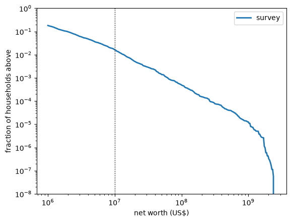
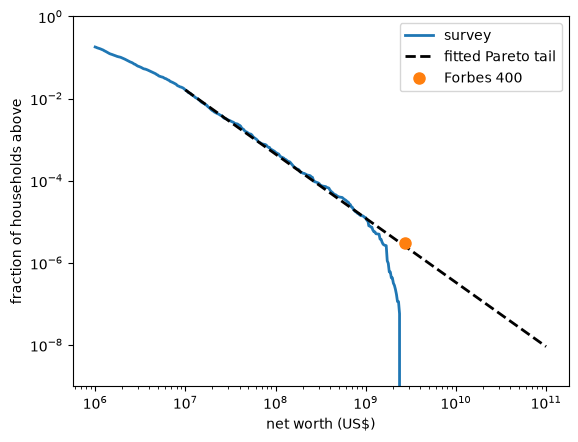
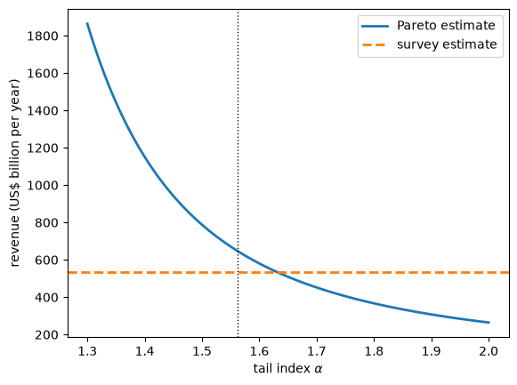

13. 估算财富税收入#
13.1. 概述#
在本讲座中，我们讨论一个有助于说明最大似然方法价值的估计问题。
这个问题是：对极富有人群的财富征税会带来多少收入？
这是一个时下热门的问题。
例如，2019 年，美国参议员伊丽莎白·沃伦提出对家庭净资产超过 5000 万美元的部分每年征税，超过 10 亿美元的部分税率更高（参见 提案）。
埃马纽埃尔·赛斯和加布里埃尔·祖克曼估计，该税收方案将在十年内带来约 2.75 万亿美元的收入（致沃伦的信），并在 [Saez and Zucman, 2019] 中详细讨论了财富税问题。
其他经济学家认为这些估计过高，而这种分歧主要集中在最富有家庭的数量和财富上。
在本讲座中，我们使用美国家庭调查数据来估算财富税的收入。
估计工作颇具挑战性，因为最富有的家庭在数据中的代表性不足。
为了填补这一空白，我们使用帕累托分布来建模财富分布的上尾，并通过 最大似然法 进行拟合。
我们将使用以下导入语句。
import numpy as np
import matplotlib.pyplot as plt
import pandas as pd
13.2. 税收方案#
我们研究对沃伦提案的一种修改版本，其边际税率表如下：
净资产 |
边际税率 |
|---|---|
1000 万美元以下 |
0% |
1000 万至 5000 万美元 |
1% |
5000 万至 10 亿美元 |
2% |
10 亿美元以上 |
6% |
我们可以如下表示这个税率表。
设 \(h(w)\) 为净资产为 \(w\) 的家庭所需缴纳的税款。
我们可以将 \(h\) 写为
其中
\(x^+ = \max\{x, 0\}\)，
阈值为 \(t_1 = 10\text{M}\)、\(t_2 = 50\text{M}\) 和 \(t_3 = 1000\text{M}\)，以及
\(r_1 = 0.01\)，\(r_2 = 0.01\)，\(r_3 = 0.04\)
注意每个 \(r_k\) 是边际税率在 \(t_k\) 处的增量。
以下是我们在 Python 中如何表示这个函数。
thresholds = np.array([10e6, 50e6, 1e9])
rate_increases = np.array([0.01, 0.01, 0.04])
def h(w, thresholds=thresholds, rate_increases=rate_increases):
"Tax paid by a household with net worth w."
return sum(r * np.maximum(w - t, 0)
for t, r in zip(thresholds, rate_increases))
总收入是全国所有家庭的 \(h(w)\) 之和。
13.3. 调查估计值#
我们的数据来自美联储理事会运行的 2022 年 消费者财务调查（SCF）。
这些数据已有几年历史，但对于本练习而言已经足够。
url = ('https://github.com/QuantEcon/data-lectures/raw/main/'
'lectures/us_household_net_worth_2022.csv')
scf = pd.read_csv(url)
scf.head()
| yy1 | y1 | wgt | networth | |
|---|---|---|---|---|
| 0 | 1 | 11 | 3027.956120 | 762100.0 |
| 1 | 1 | 12 | 3054.900065 | 854300.0 |
| 2 | 1 | 13 | 3163.637766 | 678200.0 |
| 3 | 1 | 14 | 3166.228463 | 279600.0 |
| 4 | 1 | 15 | 3235.624715 | 602600.0 |
每一行记录了被调查家庭的净资产 networth 和一个调查权重 wgt。
该权重表示这一行所代表的美国家庭数量。
（这些权重用于调整财富分布不同部分的欠抽样和过抽样。）
w = scf['networth'].to_numpy()
λ = scf['wgt'].to_numpy()
λ.sum() / 1e6 # number of US households, in millions
np.float64(131.3063893834636)
对总收入的一个明显估计是以下加权和。
这里 \(\lambda_i\) 是第 \(i\) 行的权重。
T_survey = np.sum(λ * h(w))
print(f"survey estimate: ${T_survey / 1e9:.0f} billion per year")
survey estimate: $533 billion per year
13.4. 缺失的富人#
由于设计原因，SCF 排除了一些极富有的美国人，因为这些人太容易被识别。
这意味着我们的估计值偏低。
让我们统计一下调查中不同财富水平以上的家庭数量。
levels = [10e6, 50e6, 100e6, 1e9, 2.7e9]
pd.DataFrame({
'survey households': [scf.loc[w > c, 'yy1'].nunique() for c in levels],
'US households represented': [round(λ[w > c].sum()) for c in levels]},
index=['> $10M', '> $50M', '> $100M', '> $1B', '> $2.7B'])
| survey households | US households represented | |
|---|---|---|
| > $10M | 676 | 2132856 |
| > $50M | 311 | 185003 |
| > $100M | 194 | 64443 |
| > $1B | 21 | 1655 |
| > $2.7B | 0 | 0 |
调查中只有约二十个家庭财富超过 10 亿美元，而没有一个超过 27 亿美元。
27 亿美元恰好是 2022 年进入《福布斯》400 强榜单所需的财富。
这些个人合计拥有 4.0 万亿美元的财富（《福布斯》）。
forbes_count = 400
forbes_cutoff = 2.7e9
forbes_wealth = 4.0e12
print(f"total wealth in the survey: ${np.sum(λ * w) / 1e12:.0f} trillion")
total wealth in the survey: $139 trillion
因此，在 2022 年，福布斯 400 强持有约 3% 的美国家庭财富，而这些财富全部在调查中缺失。
福布斯 400 强需要缴纳多少税？
我们只知道他们的合计财富，而不知道每个成员的财富，因此我们不能简单地对每个成员应用 \(h\)。
但每个成员的财富都超过 10 亿美元，而在这一水平以上，税收计算很简单：财富为 \(w\) 的成员在首个 10 亿美元上缴纳 \(h(1\text{B})\)，超出部分按 6% 缴纳。
将所有成员加总，得到
这只取决于他们的合计财富。
tax_on_first_billion = h(1e9) # paid in full by every member
wealth_above_billion = forbes_wealth - forbes_count * 1e9
forbes_tax = forbes_count * tax_on_first_billion + 0.06 * wealth_above_billion
print(f"tax owed by the Forbes 400: ${forbes_tax / 1e9:.0f} billion per year")
tax owed by the Forbes 400: $224 billion per year
相对于调查估计值而言，这是一笔巨大的金额，而 \(\hat T_S\) 完全遗漏了它。
还有第二个更为微妙的问题。
即使在调查确实包含极富有家庭的地方，其数量也非常少，因此调查对最高税档收入的估计仅依赖于少数几个观测值，具有很高的不确定性。
13.5. 上尾的帕累托模型#
为了解决这些问题，我们需要一个财富分布上尾的模型，可以从调查观测到的尾部部分进行估计，然后推广到调查未能观测到的部分。
正如 重尾分布 中讨论的那样，标准模型是帕累托分布，其起源可追溯到 Vilfredo [1896]。
这一选择有充分的经验支持 [Saez and Zucman, 2016]、[Vermeulen, 2018]。
同样也有理论支持：许多财富以随机速率增长的模型都会产生帕累托上尾 [Gabaix, 2016]、[Jones, 2015]、[Benhabib and Bisin, 2018]。
回顾 重尾分布，如果财富 \(W\) 在某个阈值 \(u\) 以上具有尾指数为 α 的帕累托尾部，那么
取对数后，\(\ln \mathbb{P}\{W > x\}\) 是 \(\ln x\) 的线性函数，斜率为 \(-\alpha\)。
因此，当我们在对数-对数坐标轴上绘制互补累积分布函数（超过 \(x\) 的概率）与 \(x\) 的关系图时，帕累托尾部会表现为一条直线。
让我们绘制调查数据的互补累积分布函数，使用权重使每一行按其所代表的家庭数量成比例计入。
def weighted_ccdf(x_grid, w, λ):
"Fraction of households with wealth above each point of x_grid."
return np.array([λ[w > x].sum() for x in x_grid]) / λ.sum()
x_grid = np.geomspace(1e6, 2.5e9, 300)
fig, ax = plt.subplots()
ax.loglog(x_grid, weighted_ccdf(x_grid, w, λ), lw=2, label='survey')
ax.axvline(10e6, color='k', ls=':', lw=1)
ax.set_ylim(1e-8, 1)
ax.set_xlabel('net worth (US$)')
ax.set_ylabel('fraction of households above')
ax.legend()
plt.show()


Fig. 13.1 美国家庭财富的互补累积分布函数#
在约 1000 万美元以下（虚线处），曲线发生弯折，因此该区域的分布不是帕累托分布。
在 1000 万美元以上，曲线接近一条直线。
在最右端，曲线急剧下降，因为调查数据止于略低于 24 亿美元处。
因此，我们在阈值 \(u = 1000\) 万美元以上拟合帕累托尾部，这也正是我们税收方案的起始点。
13.6. 估计尾指数#
在 最大似然估计 中，我们发现，给定已知阈值 \(u\) 以上的观测值 \(x_1, \ldots, x_n\)，尾指数的最大似然估计为
这里我们必须考虑权重。
如果第 \(i\) 行代表 \(\lambda_i\) 个家庭，那么它对总体对数似然的贡献是其对数密度的 \(\lambda_i\) 份拷贝：
用这些权重重复 最大似然估计 中的计算，得到
def tail_index(u, w, λ):
"Weighted maximum likelihood estimate of the Pareto tail index above u."
above = w > u
return λ[above].sum() / np.sum(λ[above] * np.log(w[above] / u))
u = 10e6
α_hat = tail_index(u, w, λ)
α_hat
np.float64(1.5624405884551842)
这与已发表的美国估计值相近，后者约为 1.5 [Vermeulen, 2018]。
13.7. 收入的帕累托估计#
在估计出尾部后，我们可以根据模型而非调查来计算收入。
设 \(N_u\) 为财富超过 \(u\) 的家庭数量，我们根据调查权重来估计它。
N_u = λ[w > u].sum()
N_u
np.float64(2132856.3510950943)
收入等于 \(N_u\) 乘以财富超过 \(u\) 的家庭的平均纳税额。
利用 (13.1)，这个平均值为
对于阈值 \(u\) 以上的帕累托尾部和阈值 \(t \geq u\)，一个简短的计算表明
前提是 α > 1。
（当 α ≤ 1 时，积分为无穷大，因此预期税额也是无穷大。）
综合这些结果，得到收入的帕累托估计：
def expected_excess(t, α, u):
"Expected value of (W - t)^+ for a Pareto tail above u, with t >= u."
return u**α * t**(1 - α) / (α - 1)
def pareto_revenue(α, u, N_u,
thresholds=thresholds, rate_increases=rate_increases):
"Pareto estimate of revenue, for a tail above u containing N_u households."
return N_u * np.sum(rate_increases * expected_excess(thresholds, α, u))
T_pareto = pareto_revenue(α_hat, u, N_u)
print(f"Pareto estimate: ${T_pareto / 1e9:.0f} billion per year")
Pareto estimate: $646 billion per year
13.8. 比较两种估计值#
帕累托估计值高于调查估计值。
为了看出差异的来源，让我们按税档分解收入。
第 \(k\) 档的收入是财富在 \(t_k\) 和 \(t_{k+1}\) 之间的部分按该档边际税率计算的税额。
marginal_rates = np.cumsum(rate_increases)
upper = np.append(thresholds[1:], np.inf)
survey_by_bracket = [np.sum(λ * m * np.clip(np.minimum(w, t_up) - t, 0, None))
for t, t_up, m in zip(thresholds, upper, marginal_rates)]
def excess_between(t, t_up, α, u):
"Expected wealth between t and t_up, for a Pareto tail above u."
top = expected_excess(t_up, α, u) if np.isfinite(t_up) else 0.0
return expected_excess(t, α, u) - top
pareto_by_bracket = [N_u * m * excess_between(t, t_up, α_hat, u)
for t, t_up, m in zip(thresholds, upper, marginal_rates)]
table = pd.DataFrame({'survey': survey_by_bracket,
'Pareto': pareto_by_bracket},
index=['$10M-$50M at 1%', '$50M-$1B at 2%', 'above $1B at 6%'])
table.loc['total'] = table.sum()
(table / 1e9).round(0) # billions of dollars per year
| survey | Pareto | |
|---|---|---|
| $10M-$50M at 1% | 227.0 | 226.0 |
| $50M-$1B at 2% | 273.0 | 250.0 |
| above $1B at 6% | 32.0 | 171.0 |
| total | 533.0 | 646.0 |
在第一档中，调查拥有数百个家庭观测值，两种估计几乎完全一致。
这令人放心，因为它表明帕累托模型很好地描述了调查所观测到的那部分尾部。
随着我们向上移动，估计值出现分歧，而在最高税档中，帕累托估计值要大出好几倍。
这正是调查数据稀疏并随后终止的地方，也正是我们对缺失家庭产生担忧的地方。
13.9. 与福布斯 400 强的对照检验#
帕累托模型对不在调查中的家庭做出了预测，我们可以用福布斯 400 强来检验这些预测。
根据该模型，财富超过福布斯门槛 \(c = 27\) 亿美元的家庭数量为 \(N_u (u / c)^{\alpha}\)。
这些家庭的平均财富为 \(\alpha c / (\alpha - 1)\)，这可由 (13.2) 令 \(u = t = c\) 并加上 \(c\) 得出。
n_forbes_model = N_u * (u / forbes_cutoff)**α_hat
wealth_forbes_model = n_forbes_model * α_hat * forbes_cutoff / (α_hat - 1)
pd.DataFrame({'Pareto model': [n_forbes_model, wealth_forbes_model / 1e12],
'Forbes': [forbes_count, forbes_wealth / 1e12]},
index=['households above $2.7B', 'their wealth ($ trillion)']).round(1)
| Pareto model | Forbes | |
|---|---|---|
| households above $2.7B | 338.9 | 400.0 |
| their wealth ($ trillion) | 2.5 | 4.0 |
该模型在这一水平预测的家庭数量比福布斯统计的略少，财富总额也明显偏低，但在数量级上是正确的。
这是一项严格的检验，因为该模型完全是根据财富低于 24 亿美元的调查家庭估计出来的。
我们可以通过将拟合的帕累托直线延伸到调查数据之外，并将福布斯 400 强作为单个数据点添加进去，从图形上看出这一点。
N = λ.sum()
x_fit = np.geomspace(u, 1e11, 100)
fig, ax = plt.subplots()
ax.loglog(x_grid, weighted_ccdf(x_grid, w, λ), lw=2, label='survey')
ax.loglog(x_fit, (N_u / N) * (u / x_fit)**α_hat, 'k--', lw=2,
label='fitted Pareto tail')
ax.loglog(forbes_cutoff, forbes_count / N, 'o', ms=8, label='Forbes 400')
ax.set_ylim(1e-9, 1)
ax.set_xlabel('net worth (US$)')
ax.set_ylabel('fraction of households above')
ax.legend()
plt.show()


Fig. 13.2 拟合的帕累托尾部与福布斯 400 强#
福布斯数据点位于拟合直线稍微上方。
原因可能有几种。
α 的估计值存在不确定性，一个稍小的值将会通过福布斯数据点。
分布的最顶端可能比我们用来估计 α 的范围具有更重的尾部。
富裕家庭可能不太愿意回应调查，这会使 α 的估计值偏高 [Vermeulen, 2018]。
《福布斯》使用自己的估值方法统计个人和家族，这与调查中对家庭净资产的定义有所不同。
这一比较表明，如果说存在偏差的话，我们对收入的帕累托估计反而是保守的。
13.10. α 有多重要？#
\(\hat T_P\) 的公式中，分母包含 \(\hat \alpha - 1\) 这一项。
因此，随着 α 趋近于 1，估计收入将无限增大。
让我们绘制收入与 α 的关系图。
α_values = np.linspace(1.3, 2.0, 100)
revenue = [pareto_revenue(a, u, N_u) for a in α_values]
fig, ax = plt.subplots()
ax.plot(α_values, np.array(revenue) / 1e9, lw=2, label='Pareto estimate')
ax.axhline(T_survey / 1e9, color='C1', ls='--', lw=2, label='survey estimate')
ax.axvline(α_hat, color='k', ls=':', lw=1)
ax.set_xlabel(r'tail index $\alpha$')
ax.set_ylabel('revenue (US$ billion per year)')
ax.legend()
plt.show()


Fig. 13.3 收入的帕累托估计与尾指数的关系#
将 α 从 1.6 移动到 1.4——这一变化完全处于抽样不确定性的范围之内（参见 本练习）——估计收入大约翻了一倍。
这种敏感性是财富税收入估计如此存在争议的原因之一。
最后，我们所有的估计都是机械式的：它们假设家庭不会因税收而改变其行为。
实际上，富裕家庭可能通过转移资产、改变资产估值方式或以其他方式规避税收来做出反应，而这些反应的大小正是政策辩论中的核心问题 [Saez and Zucman, 2019]。
13.11. 练习#
Exercise 13.1
沃伦最初的提案对净资产超过 5000 万美元的部分征收 2% 的税，对超过 10 亿美元的部分征收 3% 的税。
计算该税率表下收入的调查估计值和帕累托估计值。
将它们与赛斯和祖克曼估计的每年约 2750 亿美元（十年内 2.75 万亿美元）进行比较。
Solution to Exercise 13.1
我们将新的阈值和税率增量传递给我们的函数。
warren = dict(thresholds=np.array([50e6, 1e9]),
rate_increases=np.array([0.02, 0.01]))
T_s = np.sum(λ * h(w, **warren))
T_p = pareto_revenue(α_hat, u, N_u, **warren)
print(f"survey estimate: ${T_s / 1e9:.0f} billion per year")
print(f"Pareto estimate: ${T_p / 1e9:.0f} billion per year")
survey estimate: $289 billion per year
Pareto estimate: $335 billion per year
两种估计值都与赛斯和祖克曼的数字处于同一数量级。
他们的估计在几个方面与我们的不同：涵盖 2019 年至 2028 年，对分布顶端使用了不同的数据，并包含了税收规避的调整空间。
因此这种比较只是粗略的。
Exercise 13.2
估计值 \(\hat \alpha\) 存在抽样波动。
衡量这一点的一种方法是自助法（bootstrap）：从调查家庭中有放回地抽取一个新样本，重新计算估计值，并重复多次。
由于每个家庭出现在五行数据中，请对家庭（由 yy1 标识）而非对行进行重新抽样。
使用 200 个自助样本，计算 \(u = 1000\) 万美元处 \(\hat \alpha\) 的 90% 区间，以及相应的 \(\hat T_P\) 区间。
Solution to Exercise 13.2
rng = np.random.default_rng(1234)
rows_by_household = scf.groupby('yy1').indices
households = np.array(list(rows_by_household.keys()))
α_boot, T_boot = [], []
for _ in range(200):
draw = rng.choice(households, size=len(households))
idx = np.concatenate([rows_by_household[hh] for hh in draw])
w_b, λ_b = w[idx], λ[idx]
a = tail_index(u, w_b, λ_b)
α_boot.append(a)
T_boot.append(pareto_revenue(a, u, λ_b[w_b > u].sum()))
print("90% interval for α:", np.percentile(α_boot, [5, 95]).round(2))
print("90% interval for revenue ($ billion):",
(np.percentile(T_boot, [5, 95]) / 1e9).round(0))
90% interval for α: [1.43 1.71]
90% interval for revenue ($ billion): [481. 964.]
α 的区间大致在估计值周围 ±0.15 的范围内。
收入的区间很宽，这反映了前面讨论的对 α 的敏感性。
Exercise 13.3
在第一档中，调查估计值与帕累托估计值一致，因为调查在该档拥有大量观测值。
这提示我们可以采用一种混合估计：对财富低于 5000 万美元的家庭使用调查数据，对其余家庭使用帕累托模型（仍然在 \(u = 1000\) 万美元以上拟合）。
计算这个估计值。
提示：财富为 \(W > c = 5000\) 万美元的家庭在第一档缴纳 \(0.01 (c - 10\text{ million})\)，再加上 \(0.02 (W - c) + 0.04 (W - 1 \text{ billion})^+\)。
Solution to Exercise 13.3
在帕累托尾部上对提示中的公式取平均，并乘以家庭数量，超过 \(c\) 的家庭所贡献的收入为
其中 \(N_c = N_u (u / c)^\alpha\) 是财富超过 \(c\) 的家庭数量。
c = 50e6
below = w <= c
T_below = np.sum(λ[below] * h(w[below]))
N_c = N_u * (u / c)**α_hat
T_above = (N_c * 0.01 * (c - 10e6)
+ N_u * (0.02 * expected_excess(c, α_hat, u)
+ 0.04 * expected_excess(1e9, α_hat, u)))
print(f"hybrid estimate: ${(T_below + T_above) / 1e9:.0f} billion per year")
hybrid estimate: $643 billion per year
混合估计值介于调查估计值和帕累托估计值之间，并且接近帕累托估计值，因为这两者之间的大部分差异来自最高的几个税档。